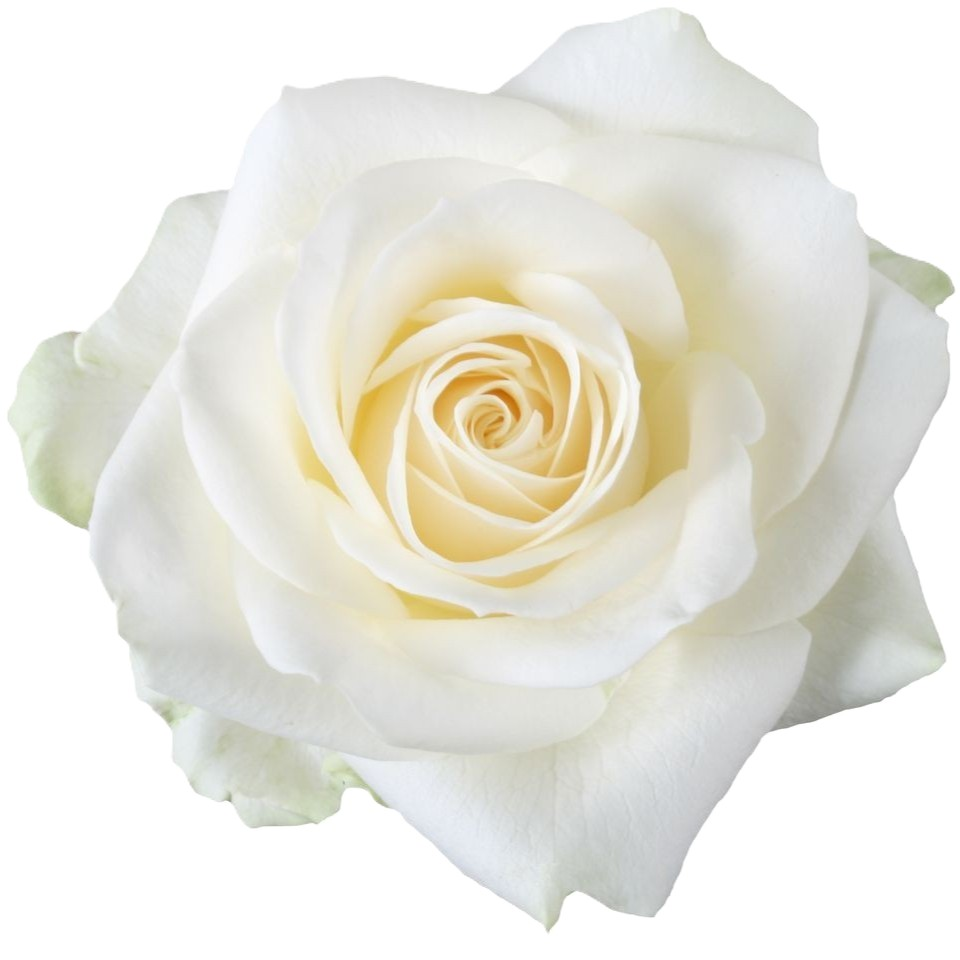
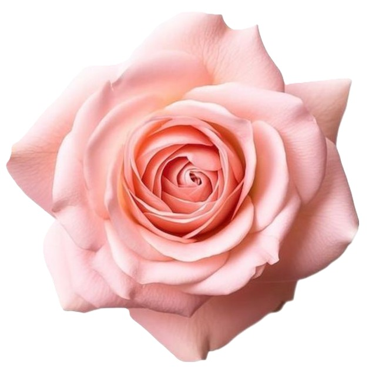

| Red roses | This stunning shade most popularly stands for passion and communicates love. It's the rose of romance and deep feelings, but it can also relay desire, beauty, victory, harmony, joy, luck, pride, and martyrdom | |
|  | White roses | White roses symbolize purity, innocence, and new beginnings, making them a popular choice for weddings, christenings, and other ceremonies that celebrate fresh starts. They also represent respect, reverence, and remembrance, often used to honor loved ones and express sympathy. |
|  | Pink roses | Pink roses broadly symbolize gratitude, admiration, and happiness, but the specific shade influences the meaning: light pink roses signify grace, gentleness, and joy, while dark pink roses convey thankfulness and appreciation. To learn more click here. |